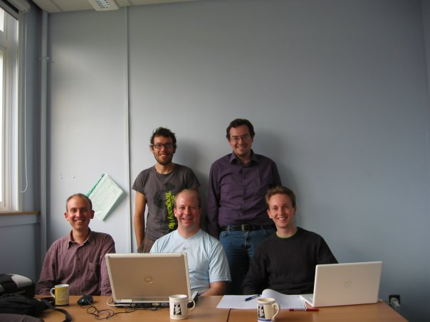
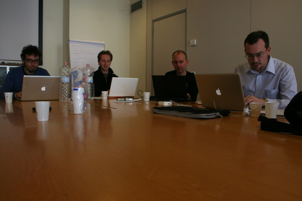

FinInG (pronounciation: [fɪnɪŋ]) is a package for computation in Finite Incidence Geometry. It provides users with the basic tools to work in various areas of finite geometry from the realms of projective spaces to the flat lands of generalised polygons. The algebraic power of GAP is employed, particularly in its facility with matrix and permutation groups.
A sample making FinInG's pronounciation crystal clear can be found here.
The development group of FinInG welcomes contact with users. In case you have obtained the package as a deposited package part of archive during the installation of GAP, we call on your beneficence to register at http://cage.ugent.be/fining when you use FinInG.
Please tell us about the use of FinInG in your research or teaching. We are very interested in results obtained using FinInG and we might refer to your work in the future. If your work is published, we ask you to cite FinInG like a journal article or book.
If you are using BibTeX, you can use the following BibTeX entry for the current FinInG version:
@manual{fining,
Author = {Bamberg, John and Betten, Anton and Cara, Philippe and
De Beule, Jan and Lavrauw, Michel and Neunh\"offer, Max },
Key = {fining},
Title = {{FinInG -- Finite Incidence Geometry, Version 1.3}},
Url = {\verb+(http://cage.ugent.be/fining)+},
Year = 2015}
Here is the bibliography entry produced by BibTeX (in bibliography style `alpha'), to be pasted directly inside the bibliography environment of your LaTeX document:
\bibitem[FinInG]{fining}
J.~Bamberg, A.~Betten, {Ph}. Cara, J.~De~Beule, M.~Lavrauw, and
M.~Neunh\"offer.
\newblock {\em Finite Incidence Geometry}.
\newblock FInInG -- a {GAP} package, version 1.3, 2015.
When linking to FinInG from a web page you can use the link
<a href="http://cage.ugent.be/fining/">FinInG</a>.
This chapter (section 1.4) describes the installation of the package. Chapter 2 contains some extended examples to introduce the user to the basic functionality and philosophy to get started. Chapter 3 contains a rigorous discription of the basic structures. This chapter can be omitted at first reading, since the set of consequent chapters is also self contained. Chapters 4, 5 and 6 deal with projective spaces, projective semilinear groups and polarities of projective spaces, respectively. In Chapter 7 the functionality for classical polar spaces is treated and in Chapter 9 affine spaces and their groups are considered. Geometry morphisms between various geometries that are available in the package, are introduced and discussed in Chapter 10. The final three chapters, 11, 12, and 13 explain the basic functionality which is provided for algebraic varieties (in projective or affine spaces), generalised polygons, of which several models can be constructed, and finally coset geometries and diagrams.
This package requires the GAP packages GAPDoc, version 1.5.1 or higher, Forms, version 1.2.3 or higher, Orb, version 4.7.3 or higher, cvec, version 2.5.3 or higher, GenSS, version 1.6.2 or higher, and GRAPE, version 4.6.1 or higher. Currently, one function will use the Design package, but this package is not required to load FinInG. The package GenSS requires the package IO. The packages required by FinInG are all part of the standard GAP distribution but some of them have to be compiled. Make sure (at least) IO, orb and cvec have been compiled before trying to load FinInG. You can find instructions on how to compile packages for your operating system on the GAP webpage. Here we just show how to compile the required packages on a UNIX-like system. In case you don't have write access to the gap installation on your computer, you should ask your system administrator to do this for you. We assume your GAP installation resides in /opt/gap4r7
user@computer:~/$ cd /opt/gap4r7/pkg user@computer:/opt/gap4r7/pkg/$ cd orb user@computer:/opt/gap4r7/pkg/orb$ ./configure checking for a BSD-compatible install... /usr/bin/install -c ... ...lots of output... ... user@computer:/opt/gap4r7/pkg/orb$ make make[1]: Entering directory `/opt/gap4r7/pkg/orb' ... ...lots of output... ... user@computer:/opt/gap4r7/pkg/orb$ cd ../io user@computer:/opt/gap4r7/pkg/io$ ./configure checking for a BSD-compatible install... /usr/bin/install -c ... ...lots of output... ... user@computer:/opt/gap4r7/pkg/io$ make make[1]: Entering directory `/opt/gap4r7/pkg/io' ... ...lots of output... ... user@computer:/opt/gap4r7/pkg/io$ cd ../cvec user@computer:/opt/gap4r7/pkg/cvec$ ./configure checking for a BSD-compatible install... /usr/bin/install -c ... ...lots of output... ... user@computer:/opt/gap4r7/pkg/cvec$ make make[1]: Entering directory `/opt/gap4r7/pkg/cvec' ... ...lots of output... ... user@computer:/opt/gap4r7/pkg/cvec$ cd ../grape/ user@computer:/opt/gap4r7/pkg/grape$ ./configure user@computer:/opt/gap4r7/pkg/grape$ make if test ! -d bin; then mkdir bin; chmod 755 bin; fi ... ...lots of output... ...
The recent development stage of FinInG is based on GAP4r5. We have done testing using GAP4r7, and no installation differences occured. In this section, we describe in detail the installation procedure for FinInG, assuming the use of GAP4r7. We have also (succesfully) tested this procedure with some older GAP releases but these required manual installation of GenSS, IO and Orb. The installation of FinInG itself is generic for each UNIX like system, including the different flavours of MacOSX. You only need a terminal application, and you need acces to the standard unix tools gunzip and tar. The installation procedure for FinInG, a standard GAP package, does not require compilation. Each GAP installation has a pkg directory, containing supplemental GAP packages. If you have acces to this filesystem, you can locate it, e.g.
/usr/local/gap4r7/pkg/
Download the FinInG archive "fining-....tgz" to this location, and unpack the archive. This can be done by issuing
gunzip fining-....tgz
which yields a file "fining-....tar", in the pkg directory, after which issuing the command
tar -xf fining-....tar
unpacks the archive in a subdirectory fining. After successfully unpacking the archive, you can locate the directory
/usr/local/gap4r7/pkg/fining/.
This directory contains a subdirectory "./doc", containing an html and pdf version of the manual. The html version is accessible by opening the file "chap0.html" in your favorite browser. The pdf version of the manual can be found in the file "manual.pdf".
Please notice that you can unpack your archive in your favorite local "./pkg" directory, e.g. "/home/yourself/pkg/", in case you are using GAP on a server on which you have only a restricted access. If you installed FinInG in the central GAP pkg directory, you can startup gap using the usual command. We suppose this is gap4r7. If you installed FinInG in your local pkg directory, e.g. "/home/yourself/pkg/", then move to "/home/yourself", and issue the command
gap -l "/usr/local/gap4r7;./"
This will cause gap to startup and use as pkg directory both its own central pkg directory, i.e. "/usr/local/gap4r7/pkg", as well as your local pkg directory, i.e. "/home/yourself/pkg/". You should see something like the following output. Notice that the packages GAPDoc and IO are loaded by default. This is not necessarily the case, but loading fining will force to load required packages anyway.
┌───────┐ GAP, Version 4.7.8 of 09-Jun-2015 (free software, GPL)
│ GAP │ http://www.gap-system.org
└───────┘ Architecture: x86_64-unknown-linux-gnu-gcc-default64
Libs used: gmp
Loading the library and packages ...
Components: trans 1.0, prim 2.1, small* 1.0, id* 1.0
Packages: AClib 1.2, Alnuth 3.0.0, AtlasRep 1.5.0, AutPGrp 1.6,
Browse 1.8.6, CRISP 1.3.8, Cryst 4.1.12, CrystCat 1.1.6,
CTblLib 1.2.2, FactInt 1.5.3, FGA 1.2.0, GAPDoc 1.5.1, IO 4.4.4,
IRREDSOL 1.2.4, LAGUNA 3.7.0, Polenta 1.3.2, Polycyclic 2.11,
RadiRoot 2.7, ResClasses 3.4.0, Sophus 1.23, SpinSym 1.5,
TomLib 1.2.5
Try '?help' for help. See also '?copyright' and '?authors'
gap>
To load FinInG, issue
LoadPackage("fining");
If this fails, in most cases, the reason is that either GAP does not find the directory in which FinInG is installed, or one of the required packages for FinInG is not installed or not compiled. Make sure (at least) IO, orb and cvec have been compiled before trying to load FinInG. The easiest way to find out what goes wrong is to load each required package before issuing the LoadPackage command to load FinInG. The example below shows this situation, the packages Forms and FinInG itself are installed in a local pkg directory, the other packages are installed centrally. Starting up gap not pointing to the local pkg directory, causes the locally installed packages to be unloadable.
gap> LoadPackage("fining"); fail gap> LoadPackage("forms"); fail gap> LoadPackage("grape"); ----------------------------------------------------------------------------- Loading GRAPE 4.6.1 (GRaph Algorithms using PErmutation groups) by Leonard H. Soicher (http://www.maths.qmul.ac.uk/~leonard/). Homepage: http://www.maths.qmul.ac.uk/~leonard/grape/ ----------------------------------------------------------------------------- true gap> LoadPackage("orb"); ----------------------------------------------------------------------------- Loading orb 4.7.3 (Methods to enumerate orbits) by Juergen Mueller (http://www.math.rwth-aachen.de/~Juergen.Mueller), Max Neunhöffer (http://www-groups.mcs.st-and.ac.uk/~neunhoef), and Felix Noeske (http://www.math.rwth-aachen.de/~Felix.Noeske). Homepage: http://gap-system.github.io/orb/ ----------------------------------------------------------------------------- gap> LoadPackage("genss"); ----------------------------------------------------------------------------- Loading genss 1.6.2 (Generic Schreier-Sims) by Max Neunhöffer (http://www-groups.mcs.st-and.ac.uk/~neunhoef) and Felix Noeske (http://www.math.rwth-aachen.de/~Felix.Noeske). Homepage: http://gap-system.github.io/genss/ ----------------------------------------------------------------------------- true
If the installation was successful, then, the following output should be visible.
gap> LoadPackage("fining"); --------------------------------------------------------------------- Loading 'Forms' 1.2.3 (26/10/2015) by John Bamberg (http://school.maths.uwa.edu.au/~bamberg/) Jan De Beule (http://www.debeule.eu) For help, type: ?Forms --------------------------------------------------------------------- ----------------------------------------------------------------------------- Loading orb 4.7.3 (Methods to enumerate orbits) by Juergen Mueller (http://www.math.rwth-aachen.de/~Juergen.Mueller), Max Neunhöffer (http://www-groups.mcs.st-and.ac.uk/~neunhoef), and Felix Noeske (http://www.math.rwth-aachen.de/~Felix.Noeske). Homepage: http://gap-system.github.io/orb/ ----------------------------------------------------------------------------- ----------------------------------------------------------------------------- Loading cvec 2.5.3 (Compact vectors over finite fields) by Max Neunhöffer (http://www-groups.mcs.st-and.ac.uk/~neunhoef). Homepage: http://gap-system.github.io/cvec/ ----------------------------------------------------------------------------- ----------------------------------------------------------------------------- Loading genss 1.6.2 (Generic Schreier-Sims) by Max Neunhöffer (http://www-groups.mcs.st-and.ac.uk/~neunhoef) and Felix Noeske (http://www.math.rwth-aachen.de/~Felix.Noeske). Homepage: http://gap-system.github.io/genss/ ----------------------------------------------------------------------------- ----------------------------------------------------------------------------- Loading GRAPE 4.6.1 (GRaph Algorithms using PErmutation groups) by Leonard H. Soicher (http://www.maths.qmul.ac.uk/~leonard/). Homepage: http://www.maths.qmul.ac.uk/~leonard/grape/ ----------------------------------------------------------------------------- loading: geometry, liegeometry, group, projectivespace, correlations, polarspace /morphisms, enumerators, diagram, varieties, affinespace/affinegroup, gpolygons, orbits+stabilisers ------------------------------------------------------------------------------- ______________ ________ _________ ______________ ___ ____/__(_)__________ _/________ ____/ __< /__|__ / __ /_ __ /__ __ \__ / __ __ \ / __ __ / ___/_ < _ __/ _ / _ / / /_/ / _ / / / /_/ / _ /______/ / /_/ /_/ /_/ /_//___/ /_/ /_/\____/ /_/_(_)____/ ------------------------------------------------------------------------------- Loading FinInG 1.3 (Finite Incidence Geometry) by John Bamberg (http://school.maths.uwa.edu.au/~bamberg/) Anton Betten (http://www.math.colostate.edu/~betten) Jan De Beule (http://www.debeule.eu) Philippe Cara (http://homepages.vub.ac.be/~pcara) Michel Lavrauw (http://cage.ugent.be/~ml) Max Neunhoeffer (http://www-groups.mcs.st-and.ac.uk/~neunhoef/) For help, type: ?FinInG --------------------------------------------------------------------- true
This is the development team (without Anton), meeting in St. Andrews in september 2008, from left to right: Philippe Cara, Michel Lavrauw, Max Neunhöffer, Jan De Beule and John Bamberg

The development team meeting again (without Anton and Max), now in Vicenza in april 2011. from left to right: Michel Lavrauw, John Bamberg, Philippe Cara, Jan De Beule.

Survivors of the first version of FinInG, enjoying a trip to Chioggia, december 2011.
The same survivors, staring at the destiny.
Anton Betten, during a milestone meeting at the finite geometries conference in Irsee, september 2014.
generated by GAPDoc2HTML